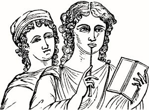
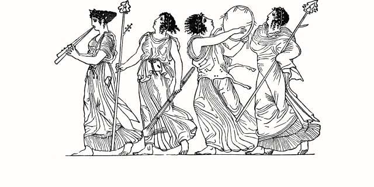
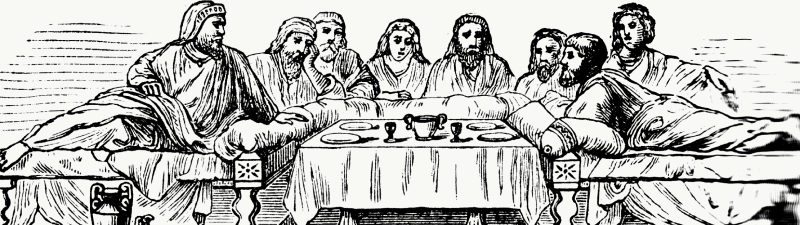

Этикет встреч
Рекомендации для продуктивных обсуждений

Какой такой этикет?
Я работаю в Контуре, а Контур — большая компания, и мы с коллегами много общаемся. Бывает, что весь день занят встречами.
Я сформулировала этикет встреч для таких же, как я.
Это не формальные правила, а рекомендации, которым я стараюсь следовать.
Тебя зовут на встречу
На встрече
Ты хочешь организовать встречу
Подумай, нужно ли вообще встречаться
Встречи нужны для обсуждения и совместного поиска решения. Возможно, вопрос можно обсудить без встречи — в почте или в чате. Или, например, обсуждать ничего не нужно, и достаточно известить всех и для этого написать письмо с решением.
Сформулируй цель
Если встреча нужна, сформулируй цель.
Что должно произойти в результате встречи?
Подумай, кто нужен на встрече
Не проводи встречу, если нет кого-то из заинтересованных или принимающих решение. Не приглашай как можно больше людей «на всякий случай».
Погрузи коллег в контекст
Для этого подготовь документацию: аналитику в вики, баг в ютреке или карточку в трелло. Напиши в приглашалке тему и вводную с ссылкой на документацию. Не отправляй встречу с темой «Поговорить» без описания, если только ты не хочешь застать человека врасплох.
Назначай встречу заранее
Наверняка ты работаешь с организованными людьми — они планируют свой день, поэтому на сегодня всё уже занято работой, даже если в календаре пусто. А ещё им надо успеть подготовиться ко встрече.
Стандартная длина встречи — 30 минут
За 30 минут можно обсудить большинство вопросов. Если встреча намечается большая, дольше 1 часа, например, ретроспектива, предусмотри небольшой перерыв. 10 минут в середине будет достаточно.
Помни о коллегах в других городах
Встреча в 10 утра в Екатеринбурге — это 8 утра в Питере и в Москве.
Подытожь
В конце встречи подытожь, что было сказано и решено, обозначь следующие шаги.
Тебя зовут на встречу
Подумай, нужен ли ты
Подумай, нужен ли ты на встрече, сформулируй для себя цель. Если считаешь, что лучше без тебя, обсуди это с организатором. Не динамь встречу, никому не сказав.
Подготовься
Прочитай документацию (аналитику в вики, карточку в трелло, баг в ютреке). Если нужно, освежи в памяти что-то еще.
На встрече

Не опаздывай
Не заставляй других членов команды тратить время на ожидание. Если понимаешь, что опаздываешь, предупреди. А когда опоздал, извинись.
Не теряй время
Если понимаешь, что бесполезен на встрече, уточни, нет ли к тебе больше вопросов. Если нет — вставай и уходи. Это нормально.
Не пытайся быть многозадачным
Если ты присутствуешь на встрече, значит, это важно. Нужно следить за темой обсуждения, а не уходить в телефон или ноутбук. Если стало скучно и хочется потупить в телефон, смотри предыдущий пункт.
Не отвлекай других
Не зови внезапно на встречу человека, если понял, что он нужен, уже на встрече. Он занят работой и не в контексте. Не факт, что он быстро сориентируется, но отвлечете вы его точно.
Не перебивай и не перекрикивай
Если появился вопрос, запиши на листок. Как правило, в ходе беседы большинство вопросов снимается.
Задавай вопросы
Особенно тем, кто молчит. У всех разный темперамент, не все решатся спросить. Важно знать мнение всех.
Критикуй правильно
Правильная критика — объективная, конкретная и относящаяся к делу. Она приносит пользу. Не надо сразу критиковать, так как даже конструктивная критика блокирует мыслительный процесс, что уж говорить о деструктивной.
Убедись, что всё ок
Убедитесь, что все поняли, что итоговое решение принято и идет в работу. И что все с ним согласны. Иначе пройдут недели, пока кто-то поймёт, что что-то не так.
После встречи
Напиши письмо с итогами на всех, кто присутствовал, распиши следующие шаги, обозначь, кто что будет делать. Это поможет исключить недопонимание, и участники встречи будут тебе благодарны.
